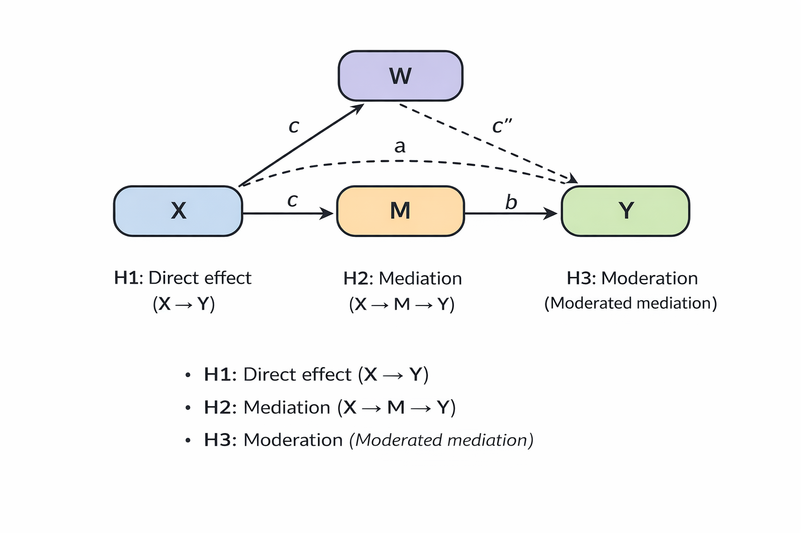

This project is currently under review at PLOS ONE. Many mediation studies in organizational behavior (e.g., Academy of Management Journal, Journal of Applied Psychology, and Organizational Behavior and Human Decision Processes) rely on overly optimistic sample size assumptions. Power analysis is a statistical method used to estimate how likely a study is to detect a true effect if that effect actually exists.
A key issue is that researchers often extend rules from simple regression models (e.g., t-tests or ANOVA using G*Power) without verifying whether these assumptions apply to mediation settings. Ideally, each hypothesis should be supported by its own power analysis. However, in organizational research—where studies often follow a strong hypothesis framework (e.g., H1: X → Y; H2: M mediates the relationship between X and Y; H3: W moderates the mediation effect)—it is common practice to run G*Power once and assume that the resulting sample size is sufficient for all hypotheses. This assumption is rarely justified.

Figure: Typical hypothesis structure including direct effect (H1), mediation (H2), and moderated mediation (H3).
In my work, I found that approximately 50% of mediation studies in organizational science are underpowered. In other words, even if the effect truly exists, these studies would fail to detect it about half of the time. This has important implications for how we interpret results, as findings may be unstable and unreliable.
Power analysis should therefore be treated as a design problem rather than a procedural step. In my paper, I provide guidance and templates that allow researchers to tailor power analyses to their specific models. I also offer conservative sample size recommendations for common mediation models, for researchers who prefer a safer, more practical approach.
As an illustration, consider Holtz et al. (2020, Study 1), which recruited 260 participants. While this sample size may be sufficient if the mediation effect is strong and well-established through prior evidence or pilot testing, I was unable to find any reported power analysis in the paper. Under more conservative assumptions, a sample size closer to 600 would typically be recommended. This does not invalidate the study, but it raises concerns about the reliability and stability of the findings if the study is underpowered.
Citation: Holtz BC, De Cremer D, Hu B, Kim J, Giacalone RA. (2020). How certain can we really be that our boss is trustworthy, and does it matter? A metacognitive perspective on employee evaluations of supervisor trustworthiness. Journal of Organizational Behavior, 41, 587–605. https://doi.org/10.1002/job.2447